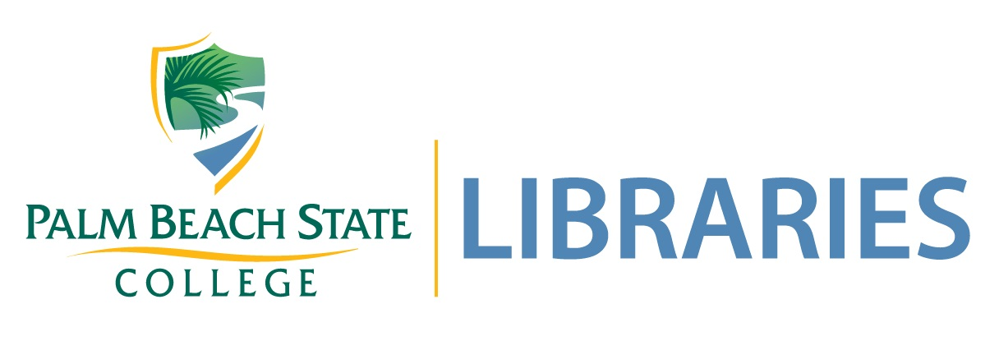
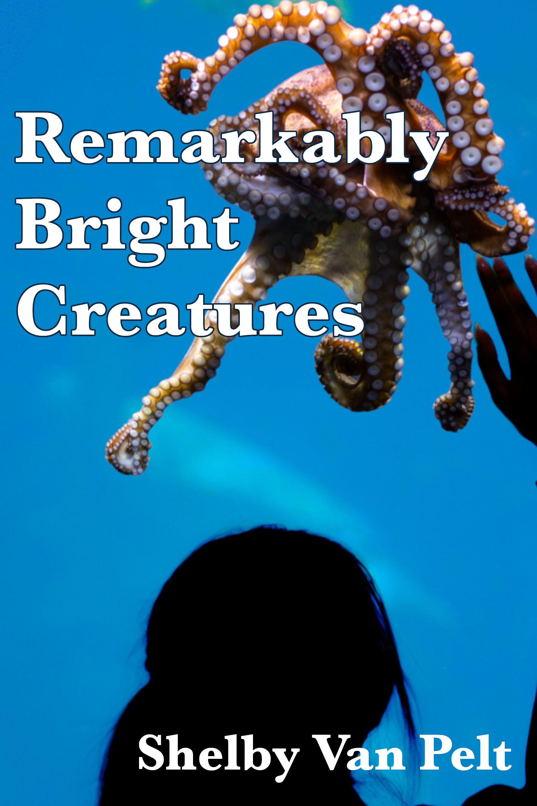
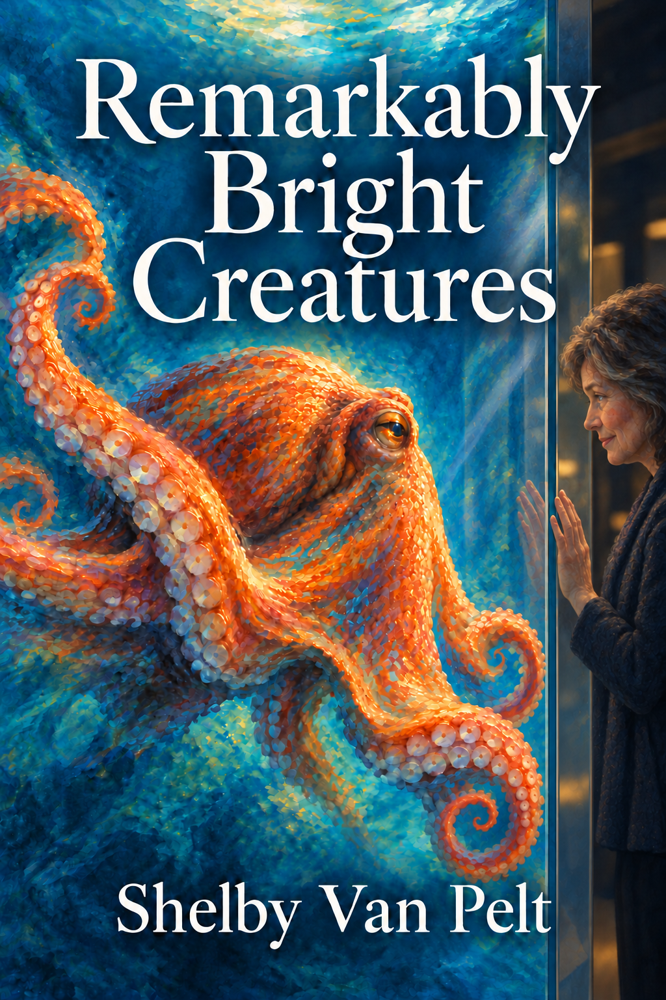

EME 6208: Designing Integrated Media Environments | University of Florida
For Project 1, I explored traditional image editing, generative AI, and vector graphic design. I created two alternative covers for Remarkably Bright Creatures by Shelby Van Pelt and designed a separate vector graphic using Inkscape.

I used GIMP to create an alternative book cover, combining photographs, typography, and image-editing techniques to represent the relationship between Tova and Marcellus.

I used generative AI to create a second cover, experimenting with prompts, visual composition, and a painterly style to represent the characters and themes of the novel.
I used Inkscape to create a Book Wizards Inc. graphic, exploring vector shapes, typography, color, and composition.